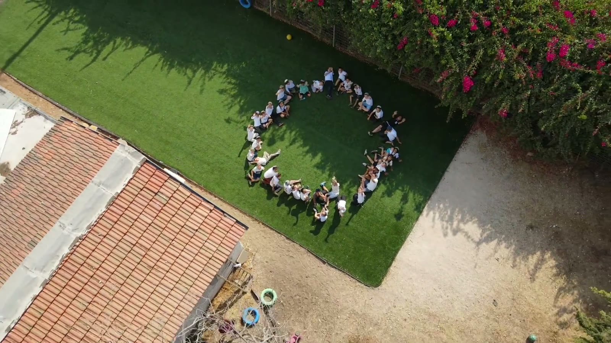
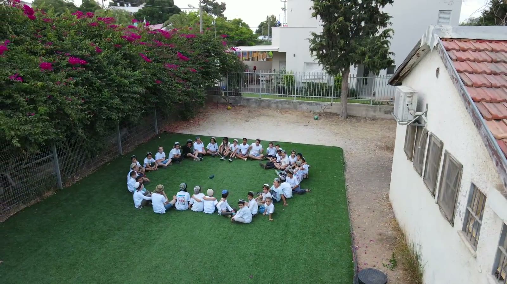
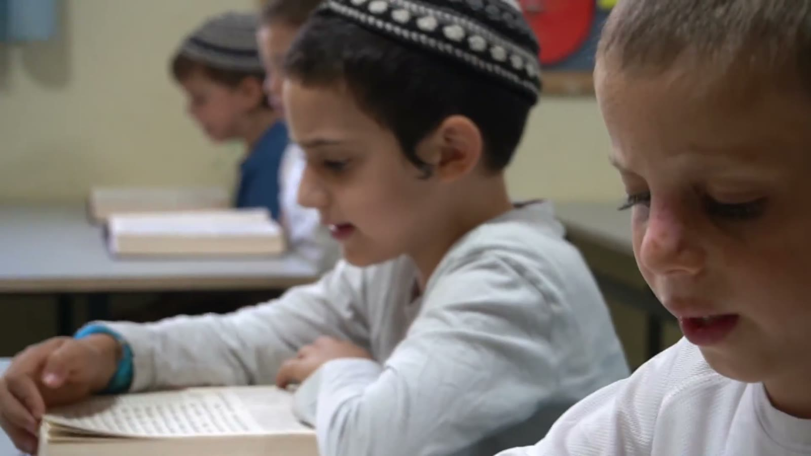

בין שיעור לחברותא, בין הפסקה לשירה — כך נראה יום רגיל בתלמוד התורה.

לימוד בחברותא

הפסקה פעילה

שיעור פנים אל פנים
07:45 · פתיחת בוקרתפילה בציבור ופתיחה חמה ליום החדש.10:15 · שיעור עיוןלימוד מעמיק בחברותות קטנות, בליווי צמוד.15:30 · סיום היוםסיכום, שירה ומחשבה קטנה לקראת הבית.